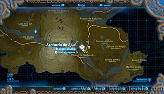
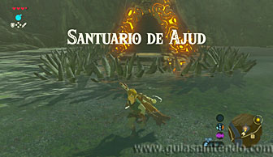
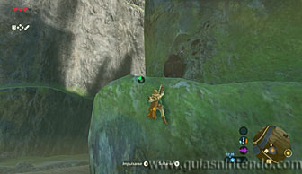
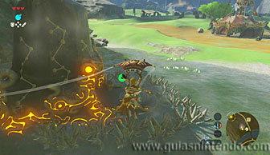
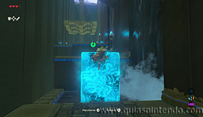
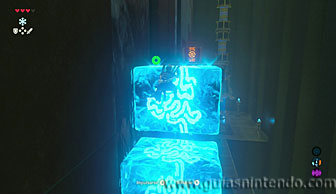
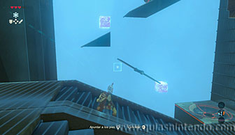
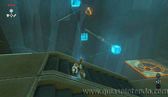
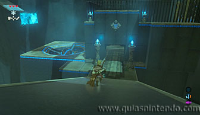
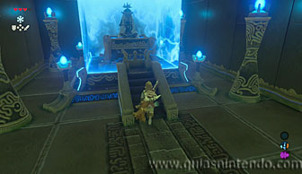

Puedes acceder a este santuario desde que llegas a la región de la torre de Picos Gemelos. Se encuentra justo enfrente de la Posta de los Picos Gemelos. Está rodeado de pinchos, por lo que si te acercas a él resultarás dañado.

Para poder entrar en él tienes que escalar al sudoeste del santuario y saltar desde allí arriba para planear con la paravela. De este modo conseguirás pasar por encima de los pinchos y llegar a la entrada.

Una vez dentro tienes que crear bloques de hielo para ir subiendo cada escalón (el primero en el suelo y el segundo en la pared).

Al llegar al último, si te das la vuelta y miras hacia arriba verás una plataforma con un cofre sobre ella (contiene una Rupia púrpura). Para llegar hasta ahí tienes que crear más bloques de hielo en la pared. Si no llegas con uno, hay espacio para crear dos en forma de escalera.

Después continúa avanzando y sube las grandes escaleras que hay. Desde allí arriba verás como cae una esfera al vacío. Tu objetivo es lograr que la esfera rebote en bloques de hielo que tú crees, para llegar al agujero de la parte inferior. Tienes que colocar tres bloques, el primero para que la esfera cambie de dirección, el segundo para que el trampolín no baje a la derecha (coloca el bloque justo bajo el extremo izquierdo del trampolín) y el tercero para ayudar a la esfera a alcanzar la plataforma final.

Al introducirse la esfera en el agujero la puerta de salida se abrirá. Baja la rampa y pasa por ella para llegar al altar del santuario. Al examinarlo obtendrás un símbolo de valía.
